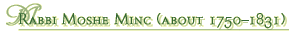
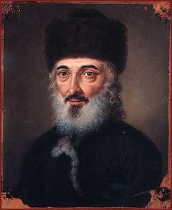

From 1790 Moshe Minc (Münz) was the chief rabbi in Óbuda. He was a conservative thinker and the main enemy of Áron Chorin.
|  | ||
|  | ||
|
Etching by Sámuel Lehnhardt (1790–1840) From 1790 Moshe Minc (Münz) was the chief rabbi in Óbuda. He was a conservative thinker and the main enemy of Áron Chorin. |
||